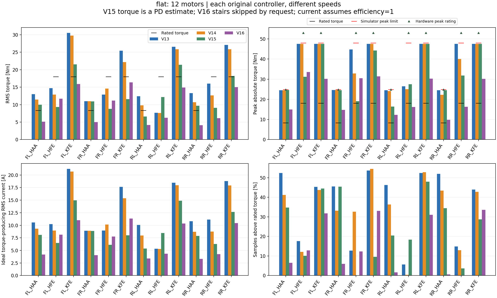
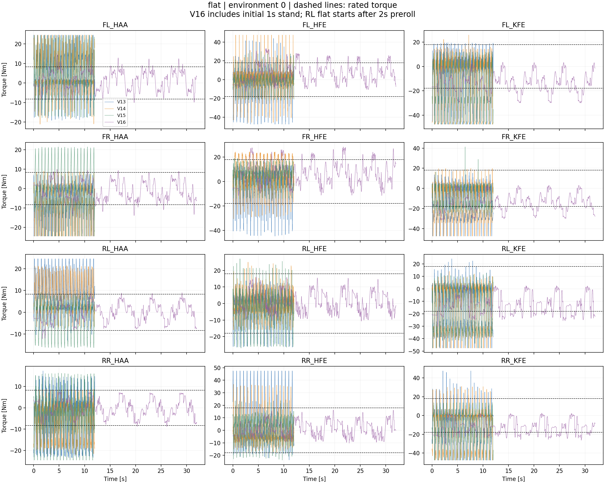
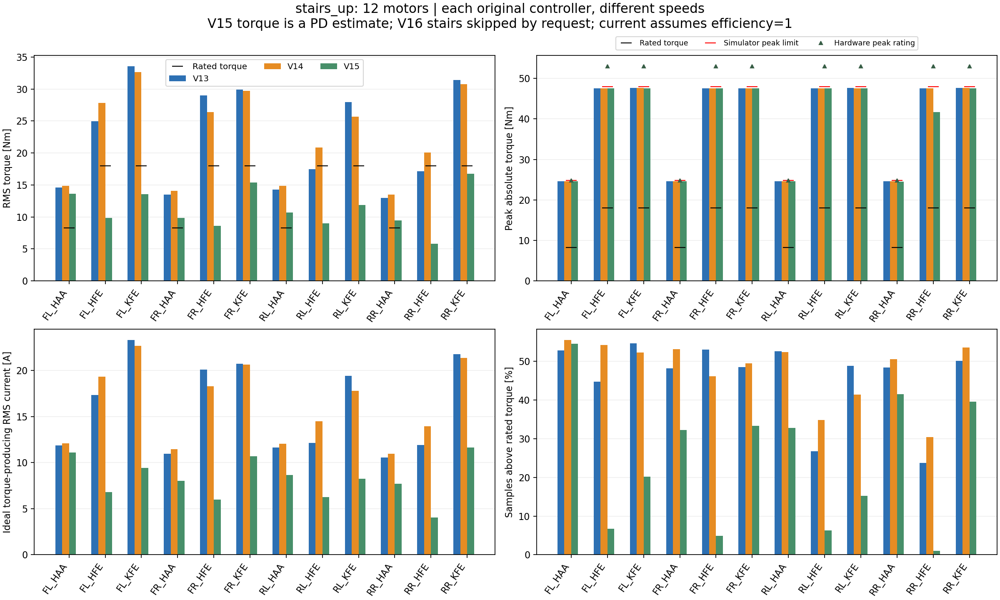
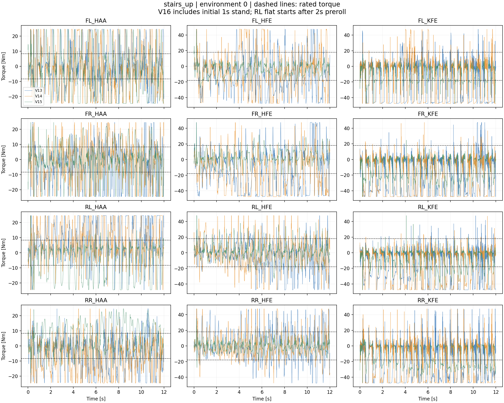

새 Isaac Sim / PhysX 실행 · ws1 · Slurm admin QoS · 200 Hz 계측 · 조건당 8환경
판정: 이번 유효 표본에서는 시뮬레이터 최대값과 실제 모터의 카탈로그 피크 토크 초과는 없었습니다. 다만 정격 토크를 넘는 순간은 V16 평지에도 있으며, RMS가 정격 이하라는 사실이 순간 정격 초과가 없음을 뜻하지 않습니다.
| 관절 / 모터 | 정격 Nm | 피크 Nm | 시뮬레이터 한도 Nm | 제조사 정격/피크 ADC |
|---|---|---|---|---|
| HAA · AK70-10 KV100 | 8.3 | 24.8 | 24.8 | 7.2 / 23.2 |
| HFE/KFE · AK10-9 KV60 V3.0 | 18 | 53 | 48 | 10.7 / 31.9 |
사용자가 모터 모델과 AK10-9 V3.0을 확인했습니다. 기존 시뮬레이터의 48 Nm 제한은 유지했습니다. 정격 초과 시간과 RMS는 부하 지표입니다. 짧은 피크가 정격보다 높다는 사실만으로 고장을 뜻하지 않으며, 온도와 연속 운전 가능 시간은 이 시험으로 판정하지 않습니다.
| 방식 | 지형 | 명령 m/s | 기간 s | 생존 | 평균 진행 m | 계단 통과 |
|---|---|---|---|---|---|---|
| V13 | flat | 0.40 | 12 | 8/8 | 8.025 | — |
| V14 | flat | 0.40 | 12 | 8/8 | 8.341 | — |
| V15 | flat | 0.40 | 12 | 8/8 | 5.921 | — |
| V16 | flat | 0.05 | 32 | 8/8 | 1.551 | — |
| V13 | stairs_up | 0.50 | 12 | 5/8 | 1.781 | 0 |
| V14 | stairs_up | 0.50 | 12 | 4/8 | 1.404 | 0 |
| V15 | stairs_up | 0.50 | 12 | 8/8 | 0.834 | 0 |
| 방식/지형 | 모터별 등가전류 RMS 범위 A | 최대 토크 Nm | RMS가 정격보다 높은 모터 | 피크 한계 초과 |
|---|---|---|---|---|
| V13 / flat | 5.32–21.21 | 47.57 | 8/12 | 없음 |
| V14 / flat | 5.27–20.68 | 47.56 | 8/12 | 없음 |
| V15 / flat | 5.35–14.96 | 47.54 | 6/12 | 없음 |
| V16 / flat | 3.32–11.35 | 33.56 | 0/12 | 없음 |
| V13 / stairs_up | 10.56–23.30 | 47.65 | 10/12 | 없음 |
| V14 / stairs_up | 10.95–22.68 | 47.63 | 12/12 | 없음 |
| V15 / stairs_up | 4.05–11.65 | 47.59 | 4/12 | 없음 |
V13: 선택된 V11 actor4999 + V12 depth + V13 LPF/guard. V14: 선택된 actor5700 + 다리 충돌 모델. V15: 선택된 actor11699 + implicit PD. V16: 작업577의 frozen WBC/CEM 제어기.
V13~V15는 flat 0.4m/s, stairs 0.5m/s, 12초, seed42입니다. V16은 검증된 0.05m/s, 32초, seed1001을 유지합니다. 따라서 동일 작업량에 대한 전력 효율 순위로 해석할 수 없습니다. 평지 RL은 2초 preroll을 제외하며, V16의 초기 1초 기립은 포함합니다. CSV에는 전체 구간(all)과 초기 2초 제외(after2s)를 모두 기록했습니다.
계단은 V13~V15의 기존 fixed_v2 지형이며 단높이 15.714cm입니다. V16은 사용자가 계단을 걷지 못한다고 알려주어 계단 평가를 제외했습니다. V16 계단 토크·전류 결과는 없습니다.

FL 앞왼쪽 · FR 앞오른쪽 · RL 뒤왼쪽 · RR 뒤오른쪽. HAA 좌우 벌림 · HFE 엉덩이 굽힘 · KFE 무릎.
전류와 토크는 첫 실패 이전의 유효 표본만 집계하며, 음의 토크도 절댓값/RMS에 포함합니다.
| 모터 | 전류 평균 |A| | 전류 RMS A | 전류 피크 A | 토크 RMS Nm | 토크 피크 Nm | 정격 초과 % | 최장 연속 초과 s | RMS > 정격 | 시뮬/모터 피크 초과 |
|---|---|---|---|---|---|---|---|---|---|
| FL_HAA | 8.20 | 10.56 | 19.96 | 12.99 | 24.55 | 52.40 | 0.335 | 예 | 없음 / 없음 |
| FL_HFE | 7.19 | 10.22 | 33.00 | 14.72 | 47.53 | 17.60 | 0.070 | 아니오 | 없음 / 없음 |
| FL_KFE | 15.44 | 21.21 | 33.01 | 30.54 | 47.53 | 45.30 | 0.325 | 예 | 없음 / 없음 |
| FR_HAA | 6.77 | 8.91 | 19.96 | 10.96 | 24.56 | 45.52 | 0.305 | 예 | 없음 / 없음 |
| FR_HFE | 6.71 | 8.93 | 31.08 | 12.87 | 44.76 | 12.73 | 0.100 | 아니오 | 없음 / 없음 |
| FR_KFE | 13.56 | 17.65 | 33.04 | 25.42 | 47.57 | 53.69 | 0.375 | 예 | 없음 / 없음 |
| RL_HAA | 7.86 | 10.08 | 19.96 | 12.40 | 24.55 | 46.30 | 0.375 | 예 | 없음 / 없음 |
| RL_HFE | 3.79 | 5.32 | 18.35 | 7.65 | 26.42 | 5.70 | 0.050 | 아니오 | 없음 / 없음 |
| RL_KFE | 14.02 | 18.46 | 33.01 | 26.58 | 47.53 | 52.38 | 0.370 | 예 | 없음 / 없음 |
| RR_HAA | 8.50 | 10.79 | 19.93 | 13.27 | 24.51 | 51.97 | 0.265 | 예 | 없음 / 없음 |
| RR_HFE | 7.18 | 11.13 | 33.00 | 16.02 | 47.52 | 14.84 | 0.105 | 아니오 | 없음 / 없음 |
| RR_KFE | 12.84 | 18.80 | 33.03 | 27.07 | 47.56 | 43.97 | 0.310 | 예 | 없음 / 없음 |
| 모터 | 전류 평균 |A| | 전류 RMS A | 전류 피크 A | 토크 RMS Nm | 토크 피크 Nm | 정격 초과 % | 최장 연속 초과 s | RMS > 정격 | 시뮬/모터 피크 초과 |
|---|---|---|---|---|---|---|---|---|---|
| FL_HAA | 6.73 | 9.33 | 19.96 | 11.48 | 24.55 | 41.18 | 0.355 | 예 | 없음 / 없음 |
| FL_HFE | 6.11 | 8.96 | 33.01 | 12.90 | 47.54 | 12.15 | 0.080 | 아니오 | 없음 / 없음 |
| FL_KFE | 14.69 | 20.68 | 33.01 | 29.77 | 47.54 | 43.73 | 0.320 | 예 | 없음 / 없음 |
| FR_HAA | 6.62 | 8.91 | 19.96 | 10.96 | 24.56 | 33.10 | 0.190 | 예 | 없음 / 없음 |
| FR_HFE | 8.43 | 10.14 | 22.82 | 14.60 | 32.86 | 32.60 | 0.210 | 아니오 | 없음 / 없음 |
| FR_KFE | 12.01 | 15.39 | 33.02 | 22.16 | 47.54 | 54.48 | 0.390 | 예 | 없음 / 없음 |
| RL_HAA | 6.35 | 7.95 | 19.57 | 9.78 | 24.08 | 36.33 | 0.210 | 예 | 없음 / 없음 |
| RL_HFE | 4.48 | 5.27 | 17.34 | 7.59 | 24.97 | 0.38 | 0.015 | 아니오 | 없음 / 없음 |
| RL_KFE | 13.62 | 17.97 | 33.02 | 25.87 | 47.54 | 52.85 | 0.385 | 예 | 없음 / 없음 |
| RR_HAA | 6.75 | 8.69 | 18.06 | 10.69 | 22.21 | 43.42 | 0.260 | 예 | 없음 / 없음 |
| RR_HFE | 6.45 | 8.76 | 27.82 | 12.61 | 40.07 | 12.96 | 0.095 | 아니오 | 없음 / 없음 |
| RR_KFE | 12.28 | 17.94 | 33.03 | 25.83 | 47.56 | 42.79 | 0.300 | 예 | 없음 / 없음 |
| 모터 | 전류 평균 |A| | 전류 RMS A | 전류 피크 A | 토크 RMS Nm | 토크 피크 Nm | 정격 초과 % | 최장 연속 초과 s | RMS > 정격 | 시뮬/모터 피크 초과 |
|---|---|---|---|---|---|---|---|---|---|
| FL_HAA | 5.72 | 8.11 | 19.97 | 9.97 | 24.56 | 34.76 | 0.095 | 예 | 없음 / 없음 |
| FL_HFE | 4.62 | 6.48 | 21.67 | 9.34 | 31.20 | 10.06 | 0.070 | 아니오 | 없음 / 없음 |
| FL_KFE | 10.97 | 14.96 | 33.01 | 21.55 | 47.53 | 44.43 | 0.285 | 예 | 없음 / 없음 |
| FR_HAA | 6.80 | 8.88 | 19.96 | 10.93 | 24.55 | 45.46 | 0.170 | 예 | 없음 / 없음 |
| FR_HFE | 5.11 | 6.10 | 13.21 | 8.78 | 19.02 | 0.10 | 0.015 | 아니오 | 없음 / 없음 |
| FR_KFE | 6.41 | 8.02 | 30.71 | 11.55 | 44.22 | 9.57 | 0.070 | 아니오 | 없음 / 없음 |
| RL_HAA | 4.14 | 5.35 | 13.33 | 6.58 | 16.40 | 20.43 | 0.140 | 아니오 | 없음 / 없음 |
| RL_HFE | 6.67 | 8.46 | 19.05 | 12.18 | 27.44 | 18.35 | 0.125 | 아니오 | 없음 / 없음 |
| RL_KFE | 11.35 | 14.88 | 33.01 | 21.43 | 47.53 | 47.90 | 0.320 | 예 | 없음 / 없음 |
| RR_HAA | 5.83 | 7.89 | 19.96 | 9.70 | 24.55 | 34.37 | 0.100 | 예 | 없음 / 없음 |
| RR_HFE | 5.46 | 6.29 | 22.09 | 9.06 | 31.81 | 3.69 | 0.030 | 아니오 | 없음 / 없음 |
| RR_KFE | 9.03 | 12.65 | 33.02 | 18.22 | 47.54 | 28.66 | 0.135 | 예 | 없음 / 없음 |
| 모터 | 전류 평균 |A| | 전류 RMS A | 전류 피크 A | 토크 RMS Nm | 토크 피크 Nm | 정격 초과 % | 최장 연속 초과 s | RMS > 정격 | 시뮬/모터 피크 초과 |
|---|---|---|---|---|---|---|---|---|---|
| FL_HAA | 3.65 | 4.17 | 12.14 | 5.13 | 14.93 | 6.46 | 0.240 | 아니오 | 없음 / 없음 |
| FL_HFE | 6.36 | 8.11 | 23.31 | 11.68 | 33.56 | 12.86 | 0.760 | 아니오 | 없음 / 없음 |
| FL_KFE | 9.56 | 11.02 | 20.98 | 15.87 | 30.21 | 31.80 | 1.540 | 아니오 | 없음 / 없음 |
| FR_HAA | 3.57 | 4.05 | 11.97 | 4.98 | 14.73 | 5.97 | 0.200 | 아니오 | 없음 / 없음 |
| FR_HFE | 6.13 | 7.76 | 21.17 | 11.17 | 30.49 | 12.30 | 0.760 | 아니오 | 없음 / 없음 |
| FR_KFE | 9.90 | 11.35 | 21.78 | 16.35 | 31.36 | 33.06 | 1.560 | 아니오 | 없음 / 없음 |
| RL_HAA | 2.78 | 3.39 | 9.97 | 4.17 | 12.26 | 1.66 | 0.260 | 아니오 | 없음 / 없음 |
| RL_HFE | 3.63 | 4.35 | 11.22 | 6.26 | 16.16 | 0.00 | 0.000 | 아니오 | 없음 / 없음 |
| RL_KFE | 8.92 | 10.33 | 21.02 | 14.88 | 30.27 | 31.05 | 1.300 | 아니오 | 없음 / 없음 |
| RR_HAA | 2.74 | 3.32 | 7.97 | 4.09 | 9.81 | 0.53 | 0.100 | 아니오 | 없음 / 없음 |
| RR_HFE | 3.54 | 4.26 | 11.32 | 6.13 | 16.30 | 0.00 | 0.000 | 아니오 | 없음 / 없음 |
| RR_KFE | 9.04 | 10.43 | 20.94 | 15.02 | 30.15 | 33.59 | 1.700 | 아니오 | 없음 / 없음 |


FL 앞왼쪽 · FR 앞오른쪽 · RL 뒤왼쪽 · RR 뒤오른쪽. HAA 좌우 벌림 · HFE 엉덩이 굽힘 · KFE 무릎.
전류와 토크는 첫 실패 이전의 유효 표본만 집계하며, 음의 토크도 절댓값/RMS에 포함합니다.
| 모터 | 전류 평균 |A| | 전류 RMS A | 전류 피크 A | 토크 RMS Nm | 토크 피크 Nm | 정격 초과 % | 최장 연속 초과 s | RMS > 정격 | 시뮬/모터 피크 초과 |
|---|---|---|---|---|---|---|---|---|---|
| FL_HAA | 9.40 | 11.88 | 19.99 | 14.61 | 24.59 | 52.86 | 0.715 | 예 | 없음 / 없음 |
| FL_HFE | 13.51 | 17.32 | 33.04 | 24.95 | 47.58 | 44.74 | 0.455 | 예 | 없음 / 없음 |
| FL_KFE | 18.15 | 23.30 | 33.07 | 33.56 | 47.62 | 54.69 | 0.465 | 예 | 없음 / 없음 |
| FR_HAA | 8.52 | 10.95 | 19.98 | 13.47 | 24.58 | 48.14 | 0.445 | 예 | 없음 / 없음 |
| FR_HFE | 16.28 | 20.12 | 33.03 | 28.98 | 47.56 | 53.03 | 0.470 | 예 | 없음 / 없음 |
| FR_KFE | 15.29 | 20.75 | 33.04 | 29.88 | 47.58 | 48.53 | 0.415 | 예 | 없음 / 없음 |
| RL_HAA | 9.16 | 11.63 | 19.97 | 14.30 | 24.57 | 52.55 | 0.455 | 예 | 없음 / 없음 |
| RL_HFE | 9.26 | 12.13 | 33.02 | 17.47 | 47.55 | 26.77 | 0.220 | 아니오 | 없음 / 없음 |
| RL_KFE | 14.35 | 19.42 | 33.09 | 27.96 | 47.65 | 48.85 | 0.525 | 예 | 없음 / 없음 |
| RR_HAA | 8.26 | 10.56 | 19.99 | 12.99 | 24.58 | 48.45 | 0.485 | 예 | 없음 / 없음 |
| RR_HFE | 8.81 | 11.91 | 33.03 | 17.15 | 47.57 | 23.78 | 0.170 | 아니오 | 없음 / 없음 |
| RR_KFE | 16.30 | 21.79 | 33.05 | 31.37 | 47.60 | 50.08 | 0.470 | 예 | 없음 / 없음 |
| 모터 | 전류 평균 |A| | 전류 RMS A | 전류 피크 A | 토크 RMS Nm | 토크 피크 Nm | 정격 초과 % | 최장 연속 초과 s | RMS > 정격 | 시뮬/모터 피크 초과 |
|---|---|---|---|---|---|---|---|---|---|
| FL_HAA | 9.73 | 12.09 | 19.99 | 14.87 | 24.58 | 55.48 | 0.315 | 예 | 없음 / 없음 |
| FL_HFE | 15.81 | 19.32 | 33.04 | 27.82 | 47.58 | 54.20 | 0.480 | 예 | 없음 / 없음 |
| FL_KFE | 17.35 | 22.68 | 33.07 | 32.67 | 47.63 | 52.27 | 0.925 | 예 | 없음 / 없음 |
| FR_HAA | 9.13 | 11.47 | 19.98 | 14.11 | 24.58 | 53.10 | 0.745 | 예 | 없음 / 없음 |
| FR_HFE | 14.35 | 18.31 | 33.03 | 26.37 | 47.56 | 46.11 | 1.490 | 예 | 없음 / 없음 |
| FR_KFE | 15.48 | 20.63 | 33.03 | 29.71 | 47.57 | 49.50 | 0.635 | 예 | 없음 / 없음 |
| RL_HAA | 9.57 | 12.07 | 19.97 | 14.84 | 24.57 | 52.41 | 0.410 | 예 | 없음 / 없음 |
| RL_HFE | 11.22 | 14.48 | 33.02 | 20.85 | 47.55 | 34.79 | 1.160 | 예 | 없음 / 없음 |
| RL_KFE | 12.58 | 17.81 | 33.05 | 25.65 | 47.59 | 41.37 | 0.390 | 예 | 없음 / 없음 |
| RR_HAA | 8.64 | 10.95 | 19.98 | 13.47 | 24.57 | 50.60 | 0.860 | 예 | 없음 / 없음 |
| RR_HFE | 10.46 | 13.93 | 33.03 | 20.06 | 47.56 | 30.43 | 0.835 | 예 | 없음 / 없음 |
| RR_KFE | 16.75 | 21.36 | 33.05 | 30.76 | 47.60 | 53.58 | 1.235 | 예 | 없음 / 없음 |
| 모터 | 전류 평균 |A| | 전류 RMS A | 전류 피크 A | 토크 RMS Nm | 토크 피크 Nm | 정격 초과 % | 최장 연속 초과 s | RMS > 정격 | 시뮬/모터 피크 초과 |
|---|---|---|---|---|---|---|---|---|---|
| FL_HAA | 8.97 | 11.10 | 19.97 | 13.65 | 24.56 | 54.54 | 0.345 | 예 | 없음 / 없음 |
| FL_HFE | 5.42 | 6.82 | 33.02 | 9.82 | 47.55 | 6.71 | 0.190 | 아니오 | 없음 / 없음 |
| FL_KFE | 7.41 | 9.41 | 33.01 | 13.55 | 47.54 | 20.16 | 0.335 | 아니오 | 없음 / 없음 |
| FR_HAA | 5.77 | 8.01 | 19.97 | 9.85 | 24.56 | 32.22 | 0.250 | 예 | 없음 / 없음 |
| FR_HFE | 4.12 | 5.98 | 33.03 | 8.62 | 47.56 | 4.84 | 0.150 | 아니오 | 없음 / 없음 |
| FR_KFE | 7.74 | 10.71 | 33.04 | 15.42 | 47.58 | 33.30 | 0.365 | 아니오 | 없음 / 없음 |
| RL_HAA | 6.37 | 8.68 | 19.97 | 10.67 | 24.56 | 32.82 | 0.345 | 예 | 없음 / 없음 |
| RL_HFE | 4.28 | 6.26 | 33.03 | 9.02 | 47.57 | 6.34 | 0.105 | 아니오 | 없음 / 없음 |
| RL_KFE | 5.66 | 8.24 | 33.05 | 11.87 | 47.59 | 15.18 | 0.280 | 아니오 | 없음 / 없음 |
| RR_HAA | 6.12 | 7.69 | 19.96 | 9.46 | 24.55 | 41.54 | 0.325 | 예 | 없음 / 없음 |
| RR_HFE | 3.04 | 4.05 | 28.94 | 5.84 | 41.67 | 1.00 | 0.035 | 아니오 | 없음 / 없음 |
| RR_KFE | 9.01 | 11.65 | 33.03 | 16.78 | 47.56 | 39.59 | 0.370 | 아니오 | 없음 / 없음 |
계단: 사용자 요청으로 미실행.

모든 조건은 원본 모델의 서로 다른 actuator와 마찰·제어 구조를 보존했습니다. 각 조건8환경, 단일 시드의 부하 측정이며 통계적 성능 보증은 아닙니다. 요구 토크(computed/requested)는 V13~V15에서 위치 목표 가드 이후, V16에서 토크 가드 이전이므로 동일한 정책 원요구량으로 비교하지 않습니다. PhysX의 관절 반력 전체를 모터 토크라고 해석하지 않았습니다. V13~V15 생존 마스크의 종료 경계는 정책 주기20ms 해상도이며, V16 추가 계측은5ms입니다. 넘어짐을 일으킨 마지막 입력까지 포함하고 이후의 자동 리셋 데이터는 제외합니다.
전류 환산은 권선 저항, 드라이버 손실, 역기전력, 회생 제동, 무부하 전류 및 온도를 포함하지 않습니다. 제조사 정격/피크 토크÷전류와 Kt×감속비가 일치하지 않아 전류 수치의 정의·보정은 실기에서 추가 확인해야 합니다.
모터별 CSV (전체 구간 + 유효 표본이 있는 초기2초 제외 구간) · 결과 JSON · 환산 가정과 모터 사양 · 분석 코드
제조사 출처: AK70-10 · AK10-9 V3.0 PDF